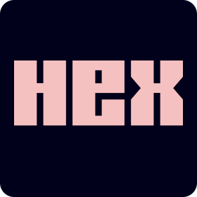

Analytics agents that learn your business automatically
November 23, 2026 · 1 min read
Swipe sideways to see every column.
| Tool | Launched | Learns from | Refresh | Human review | Stored as |
|---|---|---|---|---|---|
 HexKnowledge Engine1 |
Nov 19, 2026Public beta |
Agent chats, guides, semantic models |
Nightly |
Conflicts only |
Graph in HexNo export documented |
DatabricksGenie Ontology2 |
Jun 16, 2026Generally available |
Dashboards, queries, metric views |
“Continuous” |
None |
Snippets in GenieNo export documented |
Jun 2026Private preview |
Query history, semantic views, dashboards |
On demand |
Every change |
Snowflake objectNo export documented |
|
Apr 22, 2026Preview |
Schemas, query logs, documents |
Scheduled |
Every changeor auto-publish |
Context setAPI, export job |
|
OmniAuto Learn5 |
Jan 25, 2026On by default |
User chats |
Per chat |
Every change |
YAML in your modelGit integration |
Source: Riso Group review of vendor documentation and launch posts, November 2026. Numbers refer to the notes below. Image version of the table.

Five analytics and data tools now have features that let the agent build and update its own business context. Hex launched its Knowledge Engine on November 19; the others shipped or previewed something similar earlier this year.
An open question is portability. Omni writes what it learns into the model's YAML, which its Git integration can version. Google documents a metadata export job and APIs for its context sets. For Hex, Databricks and Snowflake we found no storage format or export documented, and nothing in the pages we read says one is coming.
Notes
- Hex. “Every night, a background Curator Agent reviews your workspace and adds any new learnings into your graph.” hex.tech/blog/knowledge-engine. Launched November 19, 2026 in the Hex 4.0 public beta. Hex also calls the graph the Knowledge Graph.
- Databricks. “A map of snippets that Genie automatically extracts and maintains from your existing assets and usage, including metric views, dashboards, SQL queries, and Genie Agents. Each snippet gets an authority score based on where it was generated from, how often it is used, and how fresh it is.” docs.databricks.com/aws/en/genie/genie-ontology. Introduced June 16, 2026 (announcement) and generally available November 11, 2026 (announcement).
- Snowflake. “It reads the signals your business already produces … such as query history, semantic views, dbt models, dashboards, table metadata, tags, and everything in Horizon Context … and assembles them into a working model of your business that Cortex Agents use to answer questions accurately.” “Scheduled refresh is not yet implemented during this private preview.” docs.snowflake.com/LIMITEDACCESS/cortex-sense-reference. Announced June 30, 2026 (announcement), with private preview planned for mid July. The announcement says Cortex Sense will refresh “on a continuous refresh cadence”; the reference documentation says scheduled refresh is not yet implemented in the private preview, so the table shows what the documentation describes today.
- Google. “The Knowledge Catalog automatically generates natural language descriptions, including business glossaries, for datasets, data products, relationships, and verified SQL patterns that allow both humans and agents to interact with data without guesswork.” cloud.google.com/blog/products/data-analytics/introducing-the-google-cloud-knowledge-catalog. The documentation calls the feature enrichment tasks in Knowledge Studio, currently in Preview: cloud.google.com/dataplex/docs/about-enrichment-tasks. Proposals are staged as change requests for a steward to approve unless auto-publish is on.
- Omni. “Auto-learn is enabled by default for all organizations. … the AI surfaces a learning summary in the chat. You can then click to apply it through the same review flow.” docs.omni.co/ai/learn-from-conversation. Launched in beta January 25, 2026 (docs.omni.co/changelog). Omni also offers Suggestions, a daily review of chat feedback, generally available since October 5, 2026.
Methodology
We read each vendor's documentation and launch posts in November 2026. Documentation was searched and summarized by LLM, and the claims in the table were checked against the pages cited in the notes. The table reflects what each vendor documents, not hands-on testing. Launch dates are the vendor's announcement or release date. “Stored as” describes where each tool keeps what it learns, and “No export documented” means we found none in the documentation, not that none exists. Quoted words, such as Databricks' “Continuous”, are the vendor's own.